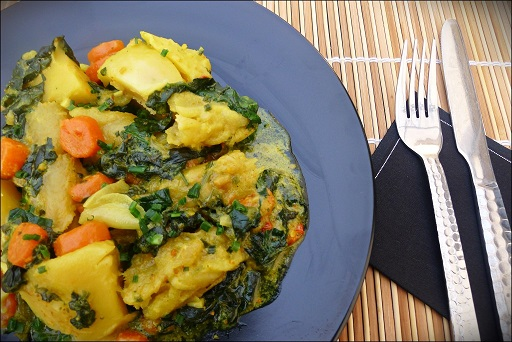

<!doctype html>
<html>
	<head>
		<meta charset="utf-8">
		<title>JavaScript Lab 1</title>
		<style> 
			 body  { 
				background-color: #cccccc;
			 } 
			 h1, h2, h5{
				text-align: center;
			 }
			.right{
				 text-align: center;
			}
		 </style>
	</head>	
	<body>
			<script type="text/javascript">
				document.write("<h1>Oil Down Recipe</h1>") 
				document.write("<h2>Nation Dish of Grenada</h2>")
				document.write("<div class='right'></div>") 
			<!-- List each ingredient using the document write method -->
		document.write("<br>This a classic dish of Grenadian cuisine. Flavored and spiced to perfection. All of this love simmered in coconut milk and tumeric, it's just delicious!")
				document.write("<p>")
					document.write("<h5>INGREDIENTS (FOR 6 PEOPLE)</h5>")
					document.write("<br><ul>2 lb salted cod, cut into chunks</ul>")
					document.write("<ul>1 large breadfruit, peeled and cut into pieces (or 2 potatoes)</ul>")
					document.write("<ul>1/2 lb of taro leaves (or spinach leaves), chopped</ul>")
					document.write("<ul>2 stalks of celery</ul>")
					document.write("<ul>3 carrots, sliced</ul>")
					document.write("<ul>3 onions, sliced</ul>")
					document.write("<ul>2 garlic cloves, crushed</ul>")
					document.write("<ul>2 sprigs of thyme</ul>")
					document.write("<ul>A few stems of chives, finely chopped</ul>")
					document.write("<ul>1 teaspoon turmeric</ul>")
					document.write("<ul>1 tablespoon fresh ginger, finely grated</ul>")
					document.write("<ul>1/2 teaspoon nutmeg</ul>")
					document.write("<ul>2 tablespoons fresh parsley, finely chopped</ul>")
					document.write("<ul>1/2 cup coconut milk</ul>")
					document.write("<ul>1 cup heavy cream</ul>")
					document.write("<ul>Salt</ul>")
					document.write("<ul>Pepper</ul>")
					document.write("<ul>5 tablespoons canola oil</ul>")
				document.write("</p>")
				<!-- Using an ordered list, print steps of recipe -->
				document.write("<br><h5>PREPARATION:</h5>")			
				document.write("<br><ol><li>Desalt the salted cod, Cut the cod into large pieces and place in a colander. </li>")
				document.write("<br><li>Immerse the colander into a large container filled with water and put it in the refrigerator. </li>")
				document.write("<br><li>Desalt for 24 hours, changing the water as often as possible. </li>")
				document.write("<br><li>In a cast iron pan preferably, sauté the onions over medium-low heat. </li>")
				document.write("<br><li>Add the hot pepper, garlic, chives, ginger, thyme, and parsley and cook for one minute, stirring constantly. </li>")
				document.write("<br><li>Add the breadfruit, carrots, green bell pepper, celery and taro leaves. </li>")
				document.write("<br><li>Mix well and cook for 5 minutes over medium / high heat. </li>")
				document.write("<br><li>Add coconut milk, heavy cream, nutmeg and turmeric. </li>")
				document.write("<br><li>Carefully place the fish in the sauce. </li>")
				document.write("<br><li>Add salt and pepper.</li></ol>")
				
			</script>
		<footer>
			Contact Student: <a href="mailto:guzmeb@mail.broward.edu">guzmeb@mail.broward.edu</a>
		</footer>
	</body>
</html>